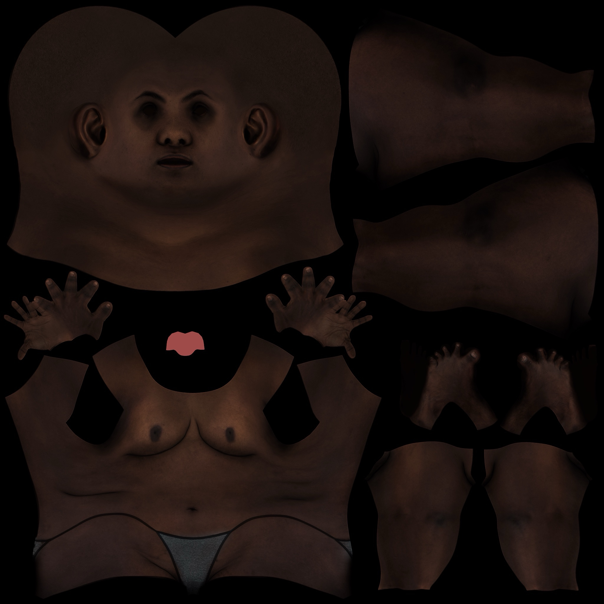
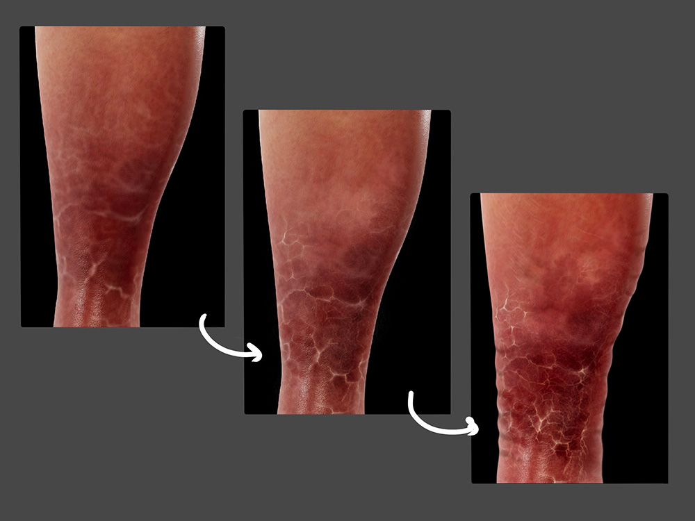

A web-based reference tool designed to improve how eczema is identified across all skin tones.
TONO is a web-based reference tool designed to improve how eczema is identified across all skin tones.
It provides healthcare professionals with illustrated images of eczema on diverse skin tones and varying severities,
aiming to enhance diagnostic accuracy and patient care.
Clinicians can select an eczema type, body region, skin tone, and severity to instantly see the corresponding image, with concise descriptors to aid recognition and differential diagnosis.
A built-in Compare tool (side-by-side or draggable slider) highlights differences between tones and severities, reducing missed or misread cues on darker skin. The interface is clean and responsive; the project is an ongoing MRP focused on equitable, consistent visual references.
A need for dermatological examples of skin of color
Currently, there is a lack of visual references that accurately depict dermatological conditions on diverse skin tones.
This gap can lead to misdiagnosis or delayed treatment for patients with skin of color.
TONO aims to address this issue by providing a comprehensive and inclusive visual resource of eczema for healthcare professionals.
why illustrations if we have photos?
Illustrated images offer more control than photographs with consistent lighting, pose, and severity across skin tones. This makes
clinical features like erythema or scaling easier to see. Showing the same image of the condition across different tones also helps
highlight how presentations can vary by allowing for direct comparison. Since images of skin of color are often underrepresented in clinical references, illustration helps
fill that critical gap.
Visual treatment
Tono will include a seven types of eczema, such as:
atopic dermatitis, contact dermatitis, dyshidrotic eczema, statis dermatitis, nummular dermatitis, neurodermatitis and seborrheic dermatitis.
Each condition will be illustrated on four different skin tones: dark, medium, olive, and fair. Additionally it will show four severities: normal, mild, moderate and severe.
User interviews were conducted to shape the design and content of TONO.
Conducted during August-September 2024
Total of 5 interviews: Family Doctors, 3 residents and 2 attendings (only 1 attending with 1+ years of experience)
Interview focus:
Experience with skin of color
Current challenges in diagnosing skin conditions on diverse skin tones
Use of visual aids and references in clinical practice
Preferences for a digital tool (features, usability, accessibility)
Design and Content preference
Tono includes seven types of eczema, such as:
atopic dermatitis, contact dermatitis, dyshidrotic eczema, statis dermatitis, nummular dermatitis, neurodermatitis and seborrheic dermatitis.
Each condition is illustrated on four different skin tones: dark, medium, olive, and fair. Additionally it will show four severities: normal, mild, moderate and severe.
Wireframes and prototypes were created in Figma to visualize the interface of TONO.
UV Maps
Using a 3D Model, I created variations of the original UV maps. The original was the "fair skintone". I created three variants of deeper skintones ensuring consistency across all images, and a realistic portrayal of the skin.

Dark skintone
Medium skintone
Olive skintone
Fair skintone
Prep for Rendering
I import my UV maps (which serve as the base for each eczema condition I’ve drawn in Procreate ) and apply them to the model.
I use the Remap Value node in the Hypershade to fine-tune visual aspects like body roughness. Once everything is calibrated, I render out the images.
Example of a rendered image with the dark skintone UV map I created (Maya).
Finetuning in Procreate
After rendering, I bring the images into Procreate and draw the eczema symptoms directly onto the skin. This phase focuses on clearly visualizing features like erythema, peeling, and thickening,
while making sure they’re accurate and consistent across all skin tones.

Realistic Detail + Clear images
This image is an example of mild to moderate lichenification. My goal across all conditions is to capture realistic skin detail while clearly showing key features like texture,
scaling, and discoloration. This balance helps ensure that clinical signs are recognizable and consistent across all skin tones. Creating images doctors can easily reference.
TONO has a total of 224 images available for Medical Practitioners to reference.